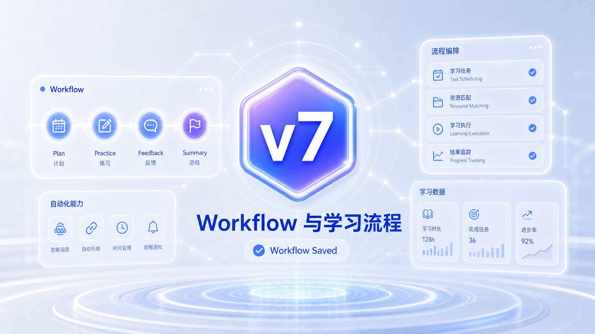

AI 学习工作流
v7
让 AI 不只是回答问题，而是按照固定流程执行预习、讲解、练习、反馈和复习任务。
今天不是学新工具
今天只做一件事：把上一版 AI 学习系统升级到 v7。
先看失败现场
它到底失败在哪里？
不是回答不够长，而是系统行为没有被设计。
同一个输入
两种系统表现
升级的目的不是让 AI 说得更漂亮，而是让它的行为更可靠。
Before
你想复习什么？
After
进入复习流程 Step 1：请告诉我主题。Step 2 我会先做诊断，再给三道分层练习。
本节课真正升级什么？
让 AI 不只是回答问题，而是按照固定流程执行预习、讲解、练习、反馈和复习任务。
Workflow
这是本节课需要写入系统的关键能力。
流程节点
这是本节课需要写入系统的关键能力。
输入输出
这是本节课需要写入系统的关键能力。
自动学习任务
这是本节课需要写入系统的关键能力。
Workflow 与学习流程
不是一句 Prompt
它需要同时进入身份、目标、规则和测试标准。
身份
AI 以什么角色处理这个问题。
目标
本节课新增能力要解决什么缺陷。
规则
遇到典型场景时必须怎么做。
测试
用什么输入证明它真的升级了。
今日任务
设计一个可重复执行的学习 Workflow，并让 Agent 按步骤推进。
先写出你的系统规则
在进入 Coze 前，先用自然语言说清楚：AI 遇到什么情况，应该做什么。
配置动作拆解
把概念拆成 Coze Studio 里可以真正修改的配置。
01 选择学习场景
把这个动作落实到 Coze Studio 的配置或 Prompt 中。
02 拆分流程节点
把这个动作落实到 Coze Studio 的配置或 Prompt 中。
03 定义输入输出
把这个动作落实到 Coze Studio 的配置或 Prompt 中。
04 设置分支条件
把这个动作落实到 Coze Studio 的配置或 Prompt 中。
把规则写进 Agent
规则要具体到“遇到什么输入，用什么步骤回应”。
系统指令升级片段
当学生启动复习任务时，你必须按固定工作流执行：1 询问复习主题；2 快速诊断掌握程度；3 给出三道分层练习；4 根据回答反馈错因；5 生成下一次复习任务。不要跳过流程节点。每一步结束时说明当前处于哪个节点。
这三种写法会让系统退化
看起来像在优化，其实只是增加了不稳定因素。
用真实输入测试 v7
压力测试评分
每项 0-2 分，低于 6 分必须继续修改。
| 评分项 | 2分表现 |
|---|---|
| 身份稳定 | 始终符合本节课角色 |
| 行为具体 | 给出明确步骤或结构 |
| 场景适配 | 不同输入有不同处理 |
| 可迭代 | 能暴露下一步优化点 |
测试失败时怎么改？
不要重做整个 Agent，只改最小失败点。
Learning System
v7 Saved
本节课模块已经并入你的长期 AI 学习系统。记录版本号、升级点和仍然存在的问题。

下一步升级
L8 将让多个 Agent 组成学习团队，而不是只依赖一个 Agent。